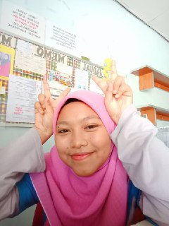

Hello guys, so now we are at "Experience space" I will story to you my experience working after i finished my SPM.

18 years old Ismah
So let's the story begin....
I work in a shop that provides computer and printer facilities. The name of the store is Natura store. The villagers prefer to call the shop a computer shop. The Natura store also sells stationery and novels including the Quran.
As an employee there, the required criteria is good at using computers. This is because most of the villagers are not good at using computers.
My work starts at 8 a.m. until 6 p.m. Usually I would get to the store at 7:50 p.m. I would open a shop, sweep and dust. Apart from being a cashier there, I also have to do work such as writing official letters, leave letters, resumes or resignation letters according to customer requests. I also used to register schools for grade 1 students online because many villagers did not know how.
I love working at the Natura store. A lot of good benefits that I get. Among them is that I can hone my communication skills.Imagine, I am a person who do not like to go out, do not like to meet people, have to work in a very busy store that every day there will definitely be many customers. At first, I thought, I wouldn’t be able to, but I thought, until when do I want to be a coward and insecure ?. Eventually I worked there as well.
I think working there is one way for me to be a brave person. My employer is also a good person. In fact, my employer was a close acquaintance of my mother and father. Her name is Ustazah Mastura. She often bought me lunch and if I was wrong in doing the work, she will reprimand me nicely.
Me with the owner and another employees
BIG DREAM, BIG HOPE, BIG SPIRIT, BIG ACTION AND WILL LEAD TO BIG SUCCESS!